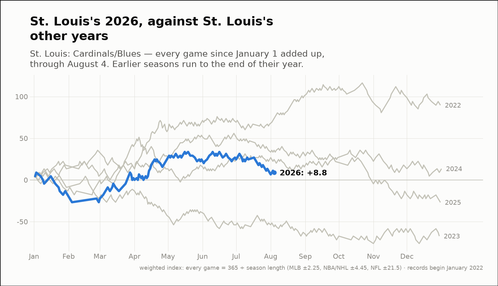
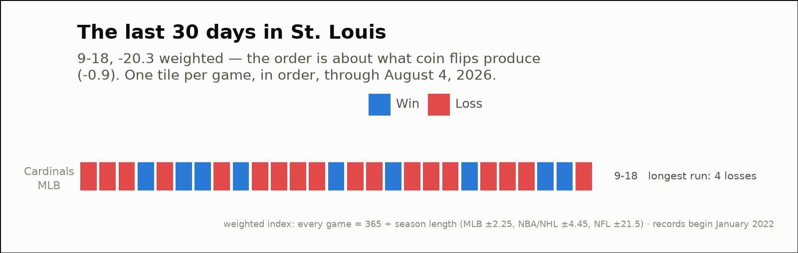

City of the day — St. Louis
St. Louis: Cardinals/Blues
- 2026 so far
- 78-77, +8.8 weighted over 155 games; longest run 7 straight wins
- Order of results
- about as clumped as coin flips (+0.7)
- Earlier seasons (full-year weighted)
- 2022 +89.6, 2023 -67.3, 2024 +13.5, 2025 -26.9
- Last 30 days
- 9-18, -20.3 weighted; longest run 4 straight losses
- Window opens
- July 6, 2026
| Team | Last 30 days | Weighted | Longest run |
|---|---|---|---|
| Cardinals | 9-18 | -20.3 | 4 straight losses |

